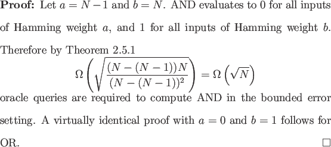

AND is the N-bit Boolean function that evaluates to 1 if and only if its input is 1N, and OR is the N-bit Boolean function that evaluates to 0 if and only if its input is 0N.

Beals et al. proved that these lower bounds are asymptotically tight in the bounded error setting [2]. Observe that we could have just as easily used Theorem 2.4.1 to attain the same lower bounds, as AND and OR are singleton functions. In the classical case exactly N oracle queries are required to compute AND or OR. Thus, quadratic improvement is possible in the quantum bounded error setting.